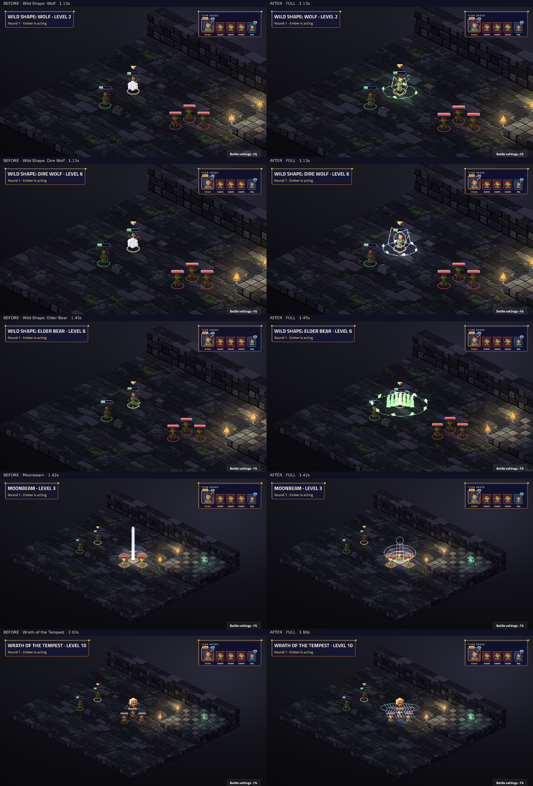

Attack · Level 1
Weapon attack, weapon range: weapon damage
Previous/revised native animal movement · Synchronized previous/revised animal motion · Native form close-ups · Settled forms in the game · Transformations · Real beast attacks · All-direction inspector · Weather and grove
Native TV capture: before on the left, after on the right. Fixed map and seed; real engine events and BeatPlayer. Level labels are the character’s unlock level. Videos preserve the complete cast, impact, effect tails and camera settle. Posters align the impact for comparison.
Frozen before: a4208a682d52cb7956dfd35d391cff49bbe13c38. Review notes and limitations · Frame measurements · Actual beat timings
Complete 53-sample contact sheet · Native cast close-up

Static modifiers have no standalone proc. Every ability and visible proc must have a real fixture for this capture to succeed.
| Name | Subclass | Level | Kind | Cut-in | Before keys | After keys |
|---|---|---|---|---|---|---|
| Cure Wounds | Base class | 1 | ability | short | characters.pray · fx.heal.nature | characters.druid_mend · fx.druid_cure_wounds.healing |
| Entangle | Base class | 1 | ability | full | characters.summon · signature.warden_vine_snare.root | characters.druid_roots · fx.druid_entangle.nature |
| Faerie Fire | Base class | 1 | ability | short | characters.summon · fx.circle.nature | characters.druid_roots · fx.druid_faerie_fire.fey |
| Fog Cloud | Base class | 1 | ability | short | characters.summon · fx.smoke.grey | characters.druid_gale · fx.druid_fog_cloud.mist |
| Healing Word | Base class | 1 | ability | short | characters.pray · fx.heal.nature | characters.druid_mend · fx.druid_healing_word.healing |
| Produce Flame | Base class | 1 | ability | none | characters.point · fx.flames.fire · projectiles.fireball | characters.druid_lash · fx.druid_produce_flame.fire · fx.druid_produce_flame_shot.fire |
| Shillelagh | Base class | 1 | ability | none | characters.ready · fx.aura.nature | characters.druid_roots · fx.druid_shillelagh.nature |
| Thorn Whip | Base class | 1 | ability | none | characters.point · fx.slash.steel | characters.druid_lash · fx.druid_thorn_whip.nature |
| Thunderwave | Base class | 1 | ability | short | characters.slam · fx.thunder.thunder | characters.druid_gale · fx.druid_thunderwave.thunder |
| Wild Shape: Wolf | Base class | 2 | ability | short | characters.summon · fx.poof.white | characters.druid_shape · fx.druid_wild_shape_wolf.nature |
| Barkskin | Base class | 3 | ability | short | characters.buff · fx.ward.nature | characters.druid_roots · fx.druid_barkskin.earth |
| Hold Person | Base class | 3 | ability | short | characters.cast · fx.hold.nature | characters.druid_roots · fx.druid_hold_person.nature |
| Lesser Restoration | Base class | 3 | ability | short | characters.pray · fx.restore.nature | characters.druid_mend · fx.druid_lesser_restoration.healing |
| Moonbeam | Base class | 3 | ability | full | characters.channel · signature.spell_moonbeam.moon | characters.druid_gale · fx.druid_moonbeam.moon |
| Moonbeam · OnEnterTile | Base class | 3 | proc | none | No art key | fx.druid_moonbeam_enter.moon |
| Moonbeam · OnTurnStart | Base class | 3 | proc | none | No art key | fx.druid_moonbeam_turn.moon |
| Spike Growth | Base class | 3 | ability | short | characters.summon · fx.circle.nature | characters.druid_roots · fx.druid_spike_growth.nature |
| Spike Growth · OnEnterTile | Base class | 3 | proc | none | No art key | fx.druid_spike_growth_step.nature |
| Wild Shape: Bear | Base class | 4 | ability | short | characters.summon · fx.poof.white | characters.druid_shape · fx.druid_wild_shape_bear.nature |
| Call Lightning | Base class | 5 | ability | full | characters.cast · signature.stormcaller_storm.storm | characters.druid_gale · fx.druid_call_lightning.storm |
| Conjure Animals | Base class | 5 | ability | short | characters.summon · fx.circle.nature | characters.druid_roots · fx.druid_conjure_animals.nature |
| Dispel Magic | Base class | 5 | ability | short | characters.channel · fx.dispel.arcane | characters.druid_roots · fx.druid_dispel_magic.arcane |
| Sleet Storm | Base class | 5 | ability | short | characters.summon · fx.ice.frost | characters.druid_gale · fx.druid_sleet_storm.frost |
| Sleet Storm · OnTurnStart | Base class | 5 | proc | none | No art key | fx.druid_sleet_storm_turn.frost |
| Wild Shape: Dire Wolf | Base class | 6 | ability | short | characters.summon · fx.poof.white | characters.druid_shape · fx.druid_wild_shape_dire_wolf.moon |
| Blight | Base class | 7 | ability | full | characters.cast · signature.spell_blight.rot | characters.druid_roots · fx.druid_blight.grave |
| Ice Storm | Base class | 7 | ability | short | characters.summon · fx.ice.frost | characters.druid_gale · fx.druid_ice_storm.frost |
| Greater Restoration | Base class | 9 | ability | short | characters.pray · fx.restore.nature | characters.druid_mend · fx.druid_greater_restoration.healing |
| Mass Cure Wounds | Base class | 9 | ability | short | characters.pray · fx.heal.nature | characters.druid_mend · fx.druid_mass_cure_wounds.healing |
| Verdant Bloom | druid.grovekeeper | 3 | ability | full | characters.cast · signature.grovekeeper_bloom.blossom | characters.druid_mend · fx.druid_bloom.healing |
| Companion | druid.grovekeeper | 3 | proc | none | No art key | fx.druid_companion.nature |
| Sanctuary Grove | druid.grovekeeper | 6 | ability | full | characters.summon · signature.grovekeeper_bloom.blossom | characters.druid_mend · fx.druid_sanctuary_grove.healing |
| Sanctuary Grove · OnTurnStart | druid.grovekeeper | 6 | proc | none | No art key | fx.druid_sanctuary_grove_mend.healing |
| Ancient Canopy | druid.grovekeeper | 10 | ability | full | characters.summon · signature.grovekeeper_bloom.blossom | characters.druid_mend · fx.druid_ancient_canopy.healing |
| Combat Wild Shape: Dire Wolf | druid.shapeshifter | 3 | ability | full | characters.buff · signature.shapeshifter_wild_shape.spring | characters.druid_shape · fx.druid_dire_form.nature |
| Primal Strike | druid.shapeshifter | 3 | static | none | No art key | No art key |
| Wild Shape: Elder Bear | druid.shapeshifter | 6 | ability | full | characters.buff · signature.shapeshifter_wild_shape.spring | characters.druid_shape · fx.druid_elder_bear_form.nature |
| Apex Predator | druid.shapeshifter | 10 | static | none | No art key | No art key |
| Primal Mend | druid.shapeshifter | 10 | ability | full | characters.cast · signature.shapeshifter_wild_shape.spring | characters.druid_mend · fx.druid_primal_mend.healing |
| Gale Burst | druid.stormcaller | 3 | ability | full | characters.cast · signature.stormcaller_storm.storm | characters.druid_gale · fx.druid_gale_burst.thunder |
| Chain Tempest | druid.stormcaller | 6 | ability | full | characters.cast · signature.stormcaller_storm.storm | characters.druid_gale · fx.druid_chain_tempest.storm |
| Storm Born | druid.stormcaller | 6 | static | none | No art key | No art key |
| Wrath of the Tempest | druid.stormcaller | 10 | ability | full | characters.summon · signature.stormcaller_storm.storm | characters.druid_gale · fx.druid_wrath_of_the_tempest.storm |
Weapon attack, weapon range: weapon damage
1 tile: heals 1d8 + casting modifier
6 tiles, burst 2: creates a vines zone (burst 2) for 3 rounds, difficult terrain, ends if you lose concentration; Str save (target is Restrained until saved; target is Stunned for 1 round)
6 tiles, burst 2: reveals hidden enemies (burst 2); Dex save (target is Lit for 3 rounds)
6 tiles, burst 2: creates a smoke zone (burst 2) for 3 rounds, blocks line of sight, ends if you lose concentration
6 tiles: heals 1d4 + casting modifier
Spell attack, 5 tiles: 1d8 fire
Self: you get +2 to attack rolls and +2 weapon damage for 3 rounds
Spell attack, 4 tiles: 1d6 piercing; pulls target up to 2 tiles toward you
Con save, self, burst 1: 2d8 thunder; pushes target 2 tiles away; half damage on a save
Self: transforms into a wolf
1 tile: target is Barkskinned for 3 rounds
6 tiles: if the target is humanoid, Wis save (target is Paralysed until saved)
1 tile: ends magical, physical, poison conditions on target
6 tiles, burst 1: creates a moonbeam zone (burst 1) for 1 round, ends if you lose concentration; units inside: When you enter a tile, on yourself: Con save (2d10 radiant; half damage on a save) / At the start of your turn, on yourself: Con save (2d10 radiant; half damage on a save)
Real engine zone entry hook.
Real engine zone turn-start hook.
6 tiles, burst 2: creates a thorns zone (burst 2) for 3 rounds, difficult terrain, ends if you lose concentration; units inside: When you enter a tile, on yourself: 2d4 piercing
Real engine zone entry hook.
Self: transforms into a bear
Dex save, 6 tiles, burst 1: 3d10 lightning; half damage on a save
4 tiles: summons 2 × wolf while you concentrate
6 tiles: ends concentration and ends zones on the aimed tile
6 tiles, burst 2: creates a ice zone (burst 2) for 3 rounds, difficult terrain, blocks line of sight, ends if you lose concentration; units inside: At the start of your turn, on yourself: Dex save (target is Prone); Dex save (target is Prone)
Real engine zone turn-start hook.
Self: transforms into a dire wolf
Con save, 5 tiles: 8d8 necrotic; half damage on a save
6 tiles, burst 2: creates a ice zone (burst 2) for 1 round, difficult terrain; Dex save (2d8 bludgeoning; 4d6 cold; half damage on a save)
1 tile: ends charm, curse, fear, magical, physical, poison, sleep conditions on target
6 tiles, burst 2: heals 3d8 + casting modifier
Circle of the Grovekeeper: 6 tiles, burst 1: heals 1d8 + casting modifier
Circle of the Grovekeeper: Real OnBattleStart hook; fixture seed 7.
Circle of the Grovekeeper: 6 tiles, burst 2: creates a grove zone (burst 2) for 3 rounds, ends if you lose concentration; units inside: At the start of your turn, on yourself: heals 1d6; heals 2d6 + casting modifier
Circle of the Grovekeeper: Real engine zone turn-start hook.
Circle of the Grovekeeper: 0 tiles, all allies: heals 3d8 + casting modifier; target gains 2d6 + casting modifier temporary HP; ends physical, poison conditions on target
Circle of the Shapeshifter: Self: transforms into a dire wolf
Circle of the Shapeshifter: Self: transforms into an elder bear
Circle of the Shapeshifter: Self: heals 2d8 + casting modifier
Circle of the Stormcaller: Str save, self, burst 1: 2d6 thunder; pushes target 2 tiles away; half damage on a save
Circle of the Stormcaller: Dex save, 6 tiles: 3d8 lightning; chains to up to 2 more targets within 3 tiles
Circle of the Stormcaller: Dex save, 6 tiles, burst 2: 6d8 lightning; pushes target 2 tiles away; target is Slowed for 2 rounds; half damage on a save
Actual transformed move. Fixture seed 7.
Actual transformed attack. Fixture seed 7.
Actual transformed revert. Fixture seed 7.
Actual transformed move. Fixture seed 7.
Actual transformed attack. Fixture seed 7.
Actual transformed revert. Fixture seed 7.
Actual transformed move. Fixture seed 7.
Actual transformed attack. Fixture seed 7.
Actual transformed revert. Fixture seed 7.
Actual transformed move. Fixture seed 7.
Actual transformed attack. Fixture seed 7.
Actual transformed revert. Fixture seed 7.